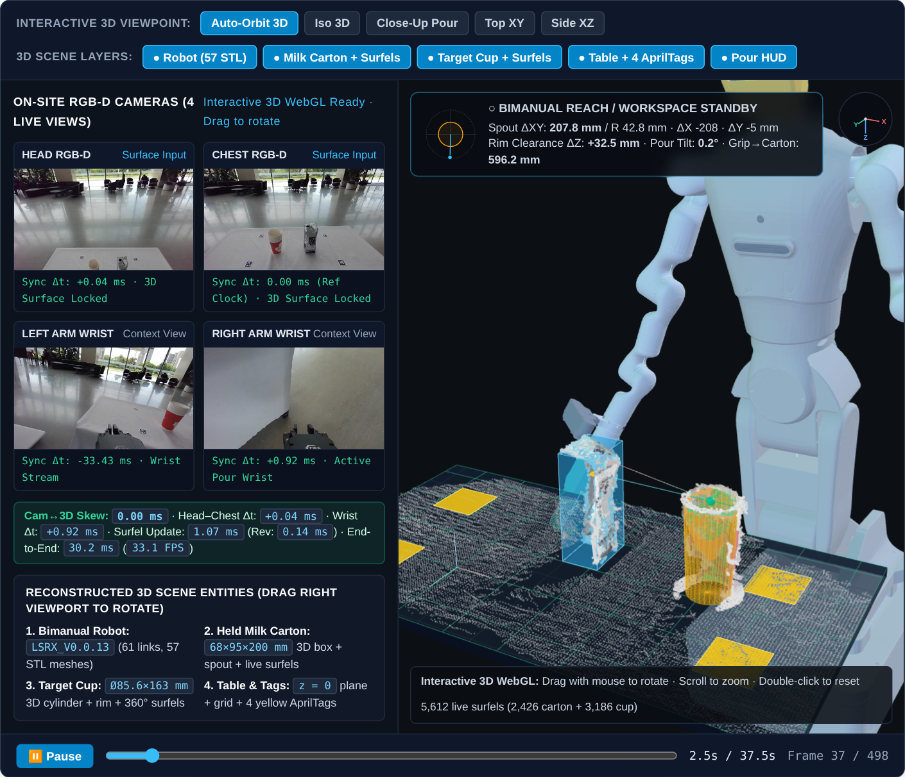

Observe & Deduplicate
Registered RGB-D and SAM 2 masks are processed with O(runs) interval arithmetic and same-thread GPU-window CPU overlap.
TIWATER RESEARCH / 3D PERCEPTION & TELEOPERATION
Sensor-grounded 3D scene reconstruction for robotic manipulation. EvidenceScene couples factor-graph observability gates, lineage-indexed revisable surfels, and fail-closed teleoperation verification.
Interactive 3D mathematical sandbox + recorded manipulation study figures

From raw sensor evidence to a verifiable manipulation workspace.
PROJECT OVERVIEW / RESEARCH
EvidenceScene is a standalone research framework for reconstructing a manipulation scene from streaming RGB-D observations. It brings together deterministic 6-DoF object tracking, factor-graph observability analysis, and lineage-indexed revisable surface reconstruction.
Occlusion, missing depth, and collinear or unanchored feature tracks can corrupt pose-graph optimization and permanently bake transient pose drift into accumulated 3D surfaces. EvidenceScene enforces causal admission gates (F + G + R) prior to graph commit and executes atomic surface-history transactions (M + S) whenever historical keyframe poses are revised.
INTERACTIVE 3D ALGORITHM SANDBOX / 01
Drag to orbit the 3D scene. Switch between the RevisableSurfelMap transaction, Schur-complement rank gate, and L2 ballistic pouring safety verifier.
LIVE BENCHMARK MATRIX / PERFORMANCE
1. Kernel Benchmark Suite (kernel-v1): Geometric-mean speed-up of 8.65x over baseline 04a1b6b with all identical output digests (updated 2026-11-08).
| Workload | Baseline | Current | Speed-up |
|---|---|---|---|
surface_snapshot_60k_budget_1500 | 20.478 ms | 0.219 ms | 93.59x |
surface_update_60k_points | 72.995 ms | 1.070 ms | 68.23x |
voxel_centroids_60k_points | 10.329 ms | 4.574 ms | 2.26x |
rle_box_centroid_480x640 | 0.092 ms | 0.092 ms | 1.00x |
surface_selection_60k_budget_1500 | 15.517 ms | 1.051 ms | 14.77x |
circle_consensus_400_points_256_hypotheses | 4.453 ms | 0.810 ms | 5.50x |
circular_aperture_fit_400_points | 4.348 ms | 1.168 ms | 3.72x |
2. Controlled Same-Input System Snapshot (ycbineoat_bleach0_refmask_40f_v1): EvidenceScene native pose branch achieves 30.23 ms p50 / 33.1 FPS vs. Point2Pose at 41.60 ms p50 / 24.0 FPS on identical locked input (39ae471e99f3…).
RECORDED MANIPULATION STUDY / 02
Explore published figures from the recorded 4-camera manipulation study. Each view highlights a different aspect of the reconstruction and operator HUD.
01 / SCENE
A cross-calibrated 4-camera view of the robot and its manipulation workspace. Registered RGB-D observations provide metric geometry without CAD priors.
These are published research figures from the recorded manipulation study. Some views include fitted task features or completed reference geometry.
FROM OBSERVATION TO SCENE / 03
A trustworthy manipulation scene requires more than frame-by-frame pose output. EvidenceScene gates pose-graph commits by local observability and binds every fused surfel to its originating keyframe lineage.
Explore the Python package & CLI ↗Registered RGB-D and SAM 2 masks are processed with O(runs) interval arithmetic and same-thread GPU-window CPU overlap.
Prior connectivity (G) and left-null-space Schur-complement rank gating (R) prevent rank-deficient or unanchored keyframes from corrupting the map.
RevisableSurfelMap indexes surfels by birth keyframe, executing atomic surface rebuild transactions when historical poses are refined.
Causal SE(3) prediction with C¹ occlusion blending and 95% ballistic rim-clearance verification provide fail-closed operator guidance.
OPEN RESEARCH / 04
Install the standalone Python package and run the closed-loop demonstration CLI on your machine: pip install -e . && evidencescene demo